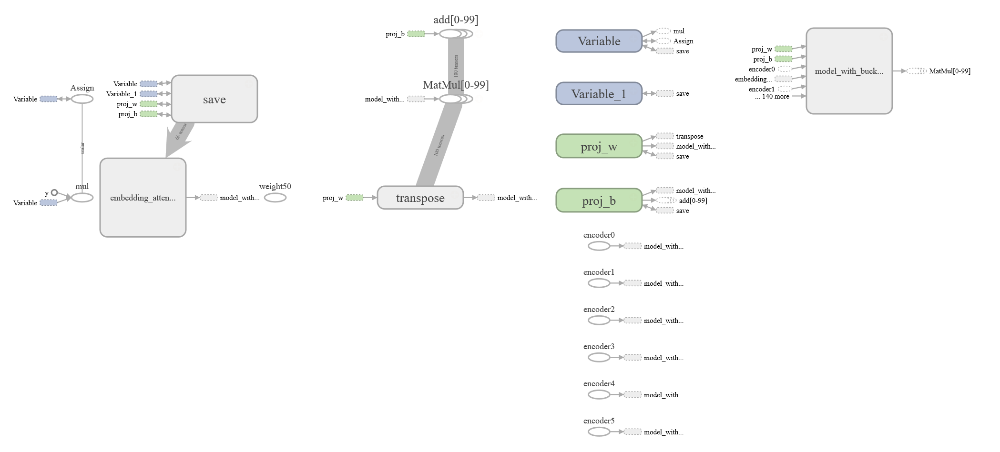

A TensorBoard graph of an LSTM network
This was generated from the TensorFlow language translation algorithm, which uses an LSTM network to translate Engiish to French. The graph is cut short - it continues down for a long distance, probably due to the recursive nature of the graph.
